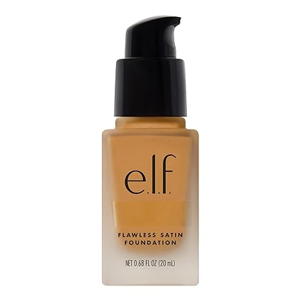
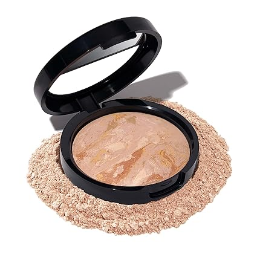
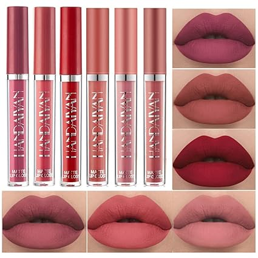
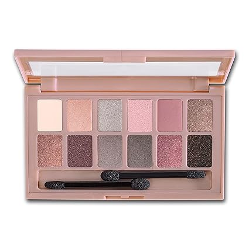

<INPUT TYPE=SUBMIT VALUE="Añadir producto al carrito" ></center>

<html>
<HEAD>
<Title>Maquillaje</tiTle>
<!autor: Damaris Menjivar>
</head>
<body BGCOLOR="violet">
<center><font face="Bodoni MT" SIZE=7 COLOR="black">Maquillaje</FONT></center>
<HR WIDTH=70% SIZE=10% COLOR="fuchsia">
<FONT SIZE=7 COLOR=brown>
<center><UL TYPE="SQUARE"></center>
<Center><LH>Base de acabado impecable e.l.f.</LH></font></center>
<font size=5 color=blue>
<Center></center>
<center><Li> Tamaño: 0.68 Fl Oz (Pack of 1).</center>
<center><Li> Forma del producto: Líquido.</center>
<center><Li> Color: Almendra</center>
<center><Li> Tipo de piel: Normal.</center>
<center><Li>Tipo de acabado: Semimate.</center>
<center><Li>Ingredientes amantes de la piel:Los productos son 100% libres de crueldad y veganos.</center>
<center><Li> US $6.00</center>
</UL></font>
</BODY>
</HTML>


<DL>
<FONT SIZE=7 COLOR=black>
<HR WIDTH=70% SIZE=10% COLOR="fuchsia">
<center><LH>Base correctora de color</LH></center>
<font size=5 color=black>
<center></center>
<DT>Forma del producto:	
<font color=blue>
<DD>Polvo.</font>
<DT>Color:
<font color=blue>
<DD> 02 Feria.</font>
<DT>Tipo de piel:
<font color=blue>
<DD>Pieles Mixta, Sensible, Grasa, Normal</font>
<DT>Tipo de acabado:
<font color=blue>
<dd>Acabado natural semimate.</font>
<DT>US:
<font color=blue>
<dd>$9.00</font>
<DT>Usos Recomendados Para Producto:
<font color=blue>
<dd>Aprobado por dermatólogos:"Aquellos con tipos de piel sensible deben buscar cosméticos que sean hipoalergénicos para evitar una reacción en la piel.</font>
</DL>
</BODY>
</HTML>


<FONT SIZE=7 COLOR=black>
<center><UL TYPE="square"></center>
<HR WIDTH=70% SIZE=10% COLOR="fuchsia">
<Center><LH>Juego de 6 lápices labiales líquidos mate.</LH></font></center>
<font size=5 color=blue>
<Center></center>
<center><Li> Marca: BestLand.</center>
<center><Li> Color: Conjunto C.</center>
<center><Li> Tipo de piel: Todos.</center>
<center><Li> Forma del producto: Líquido.</center>
<center><Li> US $8.99</center>
<center><Li>Tipo de acabado: Mate.</center>
<center><Li>Juego de 6 colores de lápiz labial líquido de terciopelo, encantador mate, duradero e impermeable, no se pega, no se decolora.</center>
</UL></font>
</BODY>
</HTML>


<FONT SIZE=7 COLOR=black>
<UL TYPE="Square">
<HR WIDTH=70% SIZE=10% COLOR="fuchsia">
<Center><LH>Maybelline New York NUDES Sombras para ojos.</LH></font></center>
<font size=5 color=blue>
<center></center>
<Li>Color: NUDES BLUSHED.
<Li>Marca: MAYBELLINE.
<Li> Forma del producto: Polvo.
<Li> Tipo de acabado: Mate, Natural, Perla, Brillo.</center>
<Li> US $11.98
<Li>Características especiales:	Doble cabeza, Versátil, con brochas para las sombras.</UL></font>
</BODY>
</HTML>


<FONT SIZE=7 COLOR=black>
<center><UL TYPE="square"></center>
<HR WIDTH=70% SIZE=10% COLOR="fuchsia">
<Center><LH>Maybelline New York - Mascara de Pestañas.</LH></font></center>
<font size=5 color=blue>
<Center></center>
<center><Li> Color: Muy negro.</center>
<center><Li> Beneficios del producto:Definición, alargamiento, voluminización, lavable.</center>
<center><Li> Características especiales:Alta densidad de pigmentos.</center>
<center><Li> Material libre de: Sin parabenos.</center>
<center><Li> US $9.48</center>
<center><Li>Marca: Maybelline.</center>
</UL></font>
</BODY>
</HTML>


<center><A HREF="Parcial.html">REGRESO AL INICIO</A></center>